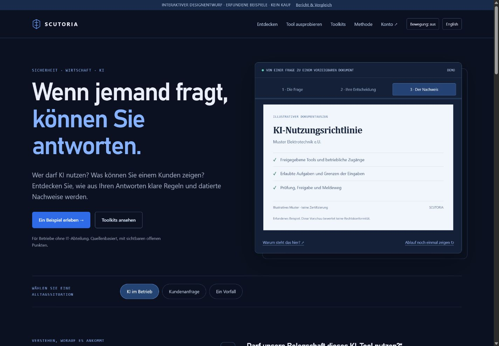
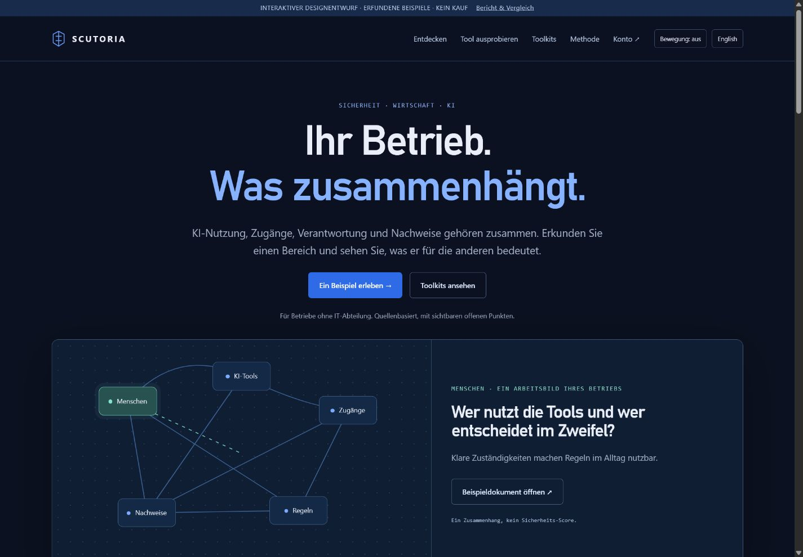
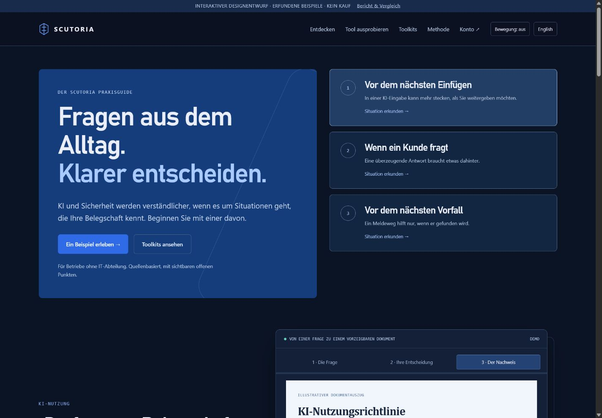
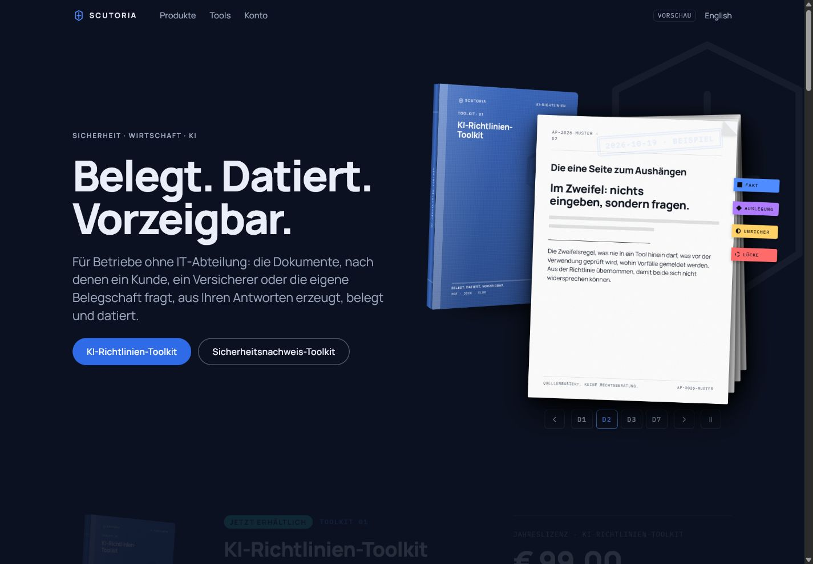

Empfohlene Grundlage
A · Evidence in motion
Von der Alltagsfrage über die Entscheidung zum Nachweis. Situationswahl, Dokumentwerkbank und abspielbarer Erklärweg machen das Produkt greifbar.
Erlebnis öffnenEnglishNeue Analyse, drei bedienbare Designrichtungen und eine vollständige Übergabe an Claude. Navy und Blau bleiben die Markenbasis.
Die Farben passen bereits. Der nächste Schritt ist eine Website, auf der Besucher etwas erkennen, ausprobieren und verstehen können: Welche Frage betrifft meinen Betrieb, was kann ich klären und welcher Nachweis entsteht daraus?
Diese neue Analyse legt den Schwerpunkt auf Alltagssituationen, eigenes Erkunden und Animation mit einer erklärenden Aufgabe. Die drei Entwürfe unten sind neu und ausdrücklich von der Live-Website zu unterscheiden.
Vollständige Analyse lesenUmsetzungsauftrag für Claude
Von der Alltagsfrage über die Entscheidung zum Nachweis. Situationswahl, Dokumentwerkbank und abspielbarer Erklärweg machen das Produkt greifbar.
Erlebnis öffnenEnglish
Menschen, Tools, Zugänge, Regeln und Nachweise auswählen. Der Zusammenhangsplan öffnet praktische Fragen und passende Erklärungen.
Erlebnis öffnenEnglish
Ein Praxisguide mit auswählbaren Kapiteln und einem passenden Dokument. Tieferes Verstehen und längere Inhalte erhalten eine eigene Form.
Erlebnis öffnenEnglishDie Prototypen verwenden vorbereitete Beispiele. Sie führen keinen Kauf aus und erstellen keine echten Kundendokumente. Links mit ↗ führen auf die aktuelle Live-Website.
A als visuelle Grundlage. Es entwickelt die bestehende Dokumentensprache am unmittelbarsten weiter. Den Zusammenhangsplan aus B würde ich bei Bedarf als Erklärmodul ergänzen. Die Kapitelstruktur von C passt zu Handbüchern und vertiefenden Inhalten.
Erfolg sollte bedeuten, dass Menschen freiwillig ein Tool nutzen, den Nutzen verstehen und ihren nächsten Schritt finden. Ob sie dadurch länger bleiben oder häufiger kaufen, ist erst nach Umsetzung und geeigneter Prüfung feststellbar.
Gib Claude START-FUER-CLAUDE.md und ANALYSE-UND-REDESIGN.md zusammen mit den HTML-Prototypen. Alternativ das vollständige ZIP-Paket verwenden. Die Analyse enthält die erneute Bestandsprüfung, die übernommenen Funktionsbelege, sämtliche technischen Befunde, konkrete Änderungsvorschläge, Texte EN/DE, Bewegungsabläufe und Abnahmekriterien.
Vollständiges Paket als ZIPClaude-Auftrag herunterladenVollständige Analyse herunterladenQuelle: eigene Browser- und HTTP-Prüfungen am 01.11.2026. Keine tatsächliche Zahlung oder E-Mail-Zustellung. Keine vollständige juristische Produktprüfung.
